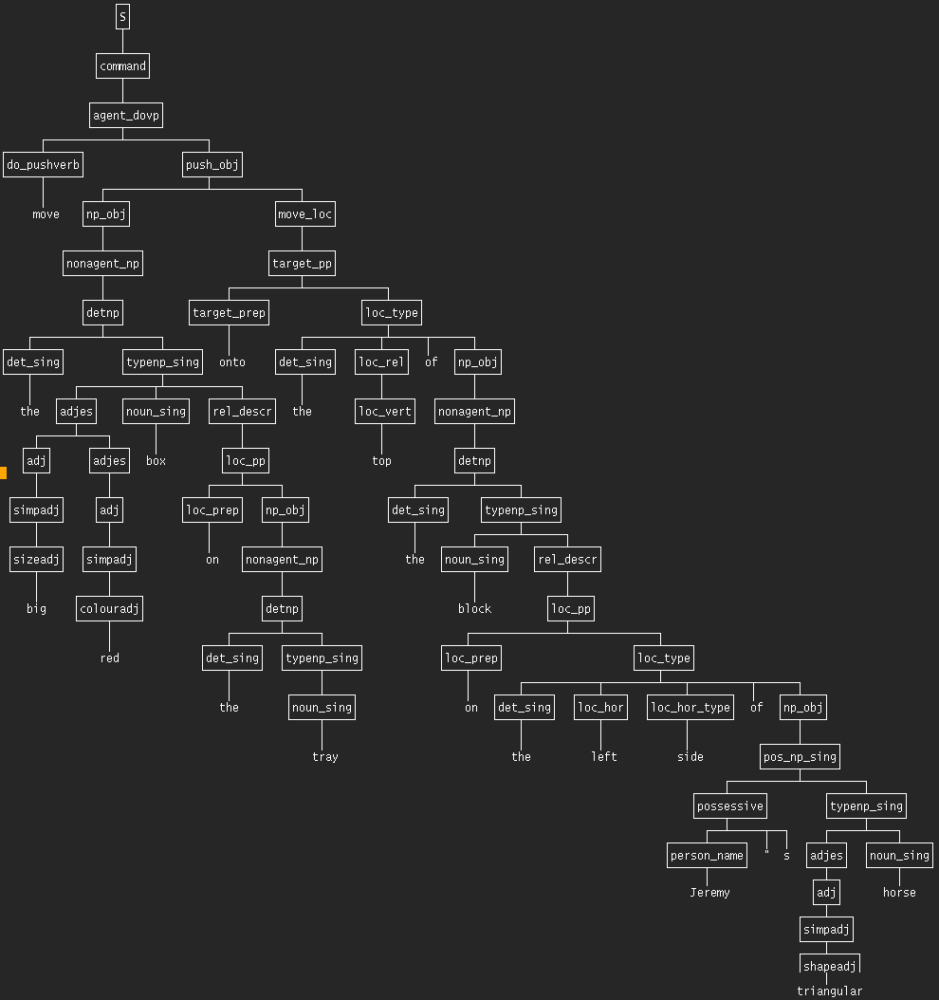

This is part of the Free Poplog Portal
CONTENTS
Using the standard Pop-11 grammar library, parsing sentences of the sorts generated by this grammar can be very slow.
Using newgrammar.p, with the ill-formed substring memory, speeds that up enormously. (The memory is cleared and rebuilt for each sentence. The program could be changed to create an enduring memory of things not to try.)
This grammar was hand-coded, using an idea suggested long ago by Gerald Gazdar, namely compiling semantic categories into syntactic categories. In a more ambitious project it might be possible to make a system that can learn such a grammar by being exposed to a very large corpus of examples.
This includes some examples that invoke the linux 'espeak' program to say the generated sentences out loud.
[move the big red box on the tray onto the top of the block on the left side of Jeremy"s triangular horse]The parse tree is too big to be displayed easily, though it can be displayed in an xterm-compatible window, or using the poplog XVed editor.
A screen-shot of the tree displayed in an xterm window with a small font is below,
automatically generated by the Pop-11 'showtree' library package.

This file maintained by:
Aaron Sloman
School of Computer Science, University of Birmingham
Installed: 13 Jun 2011
Last Updated: 14 Jun 2011
Aaron Sloman http://www.cs.bham.ac.uk/~axs